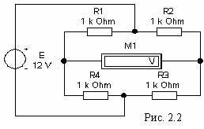

Задание 1. Собрать схему одинарного моста (рис. 2.2)

на рабочем поле программы EWB или программы MS8 Education (либо открыть файл Lr2.ewb при выполнении работы в среде EWB или файл Lr2.ms8 при выполнении работы в среде MS8SD) и, после двойного щелчка мышью на изображении каждого компонента в открывающихся окнах, установить указанные ниже значения параметров элементов, а завершать их ввод нужно щелчком мыши на кнопке Accept (Принять):
- резисторов: R1 = R2 = R3 = R4 = 1 + 0,05N, кОм, где N – номер записи фамилии студента в учебном журнале группы;
- приращение резисторов R4 и R2: ΔR = 0,01· N1/3, кОм c округлением третьего знака после запятой;
- источника напряжения: ЭДС E = 12 В (источник идеальный, Rвт = 0);
- вольтметра: род тока (mode) - постоянный (DC), внутреннее сопротивление (Resistance) RV = 1 MОм.